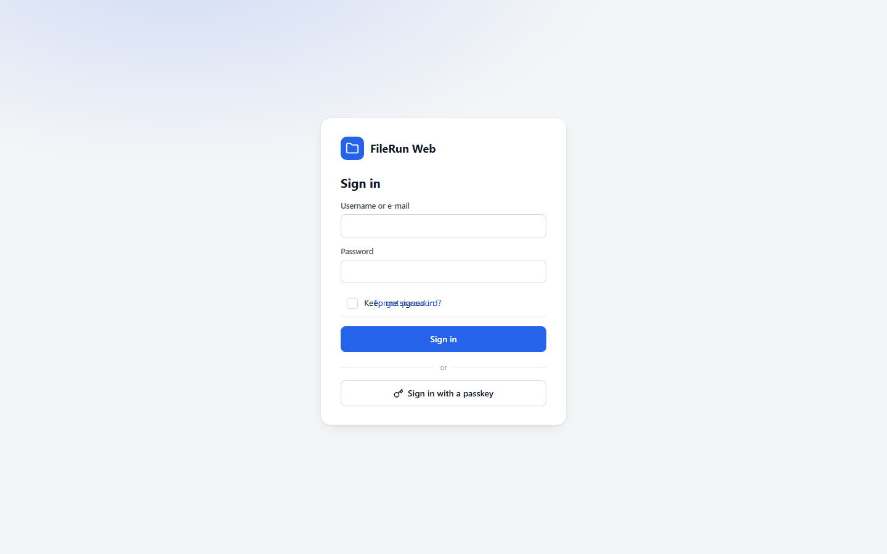
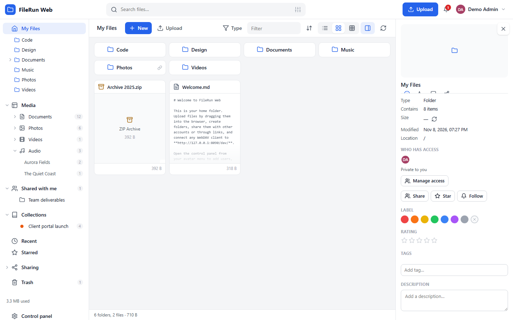
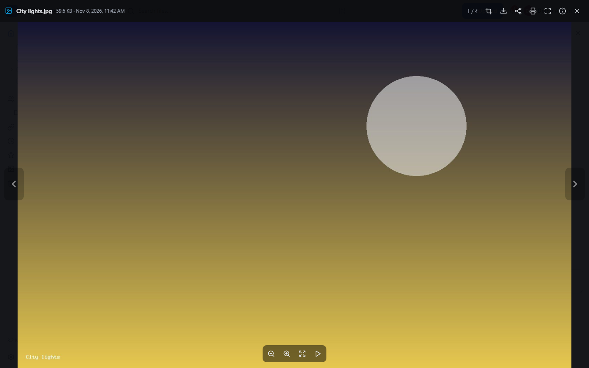
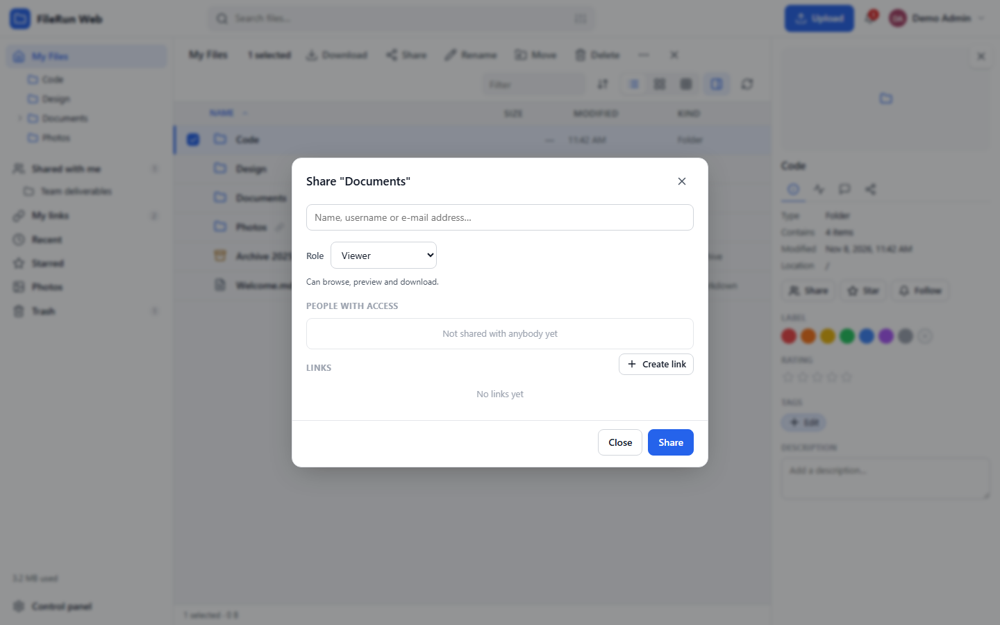
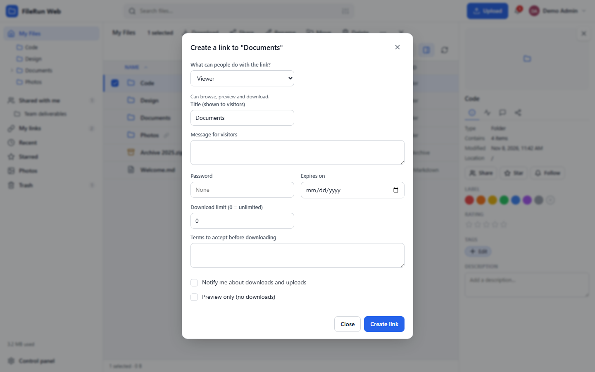
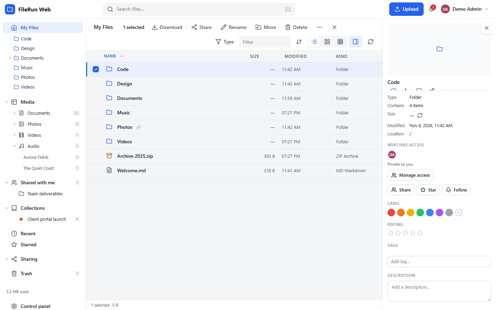
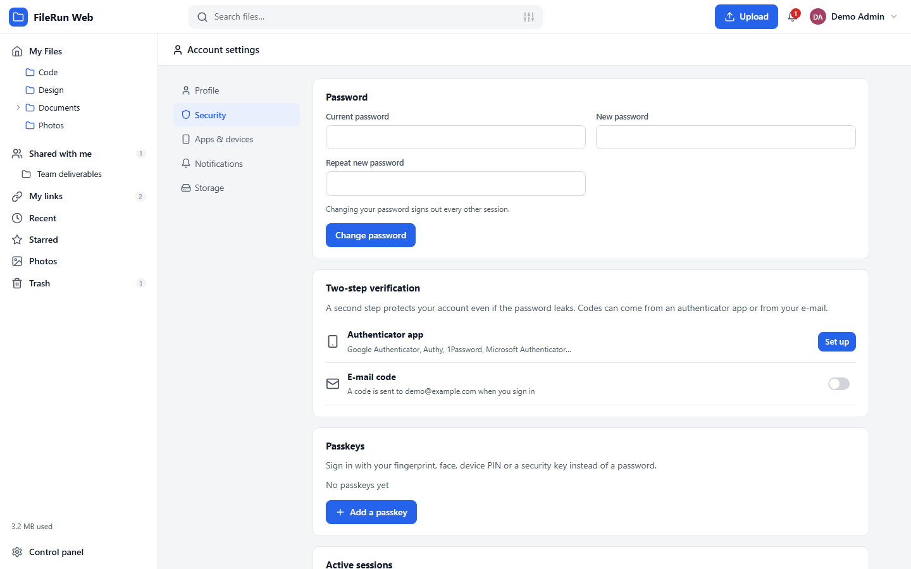
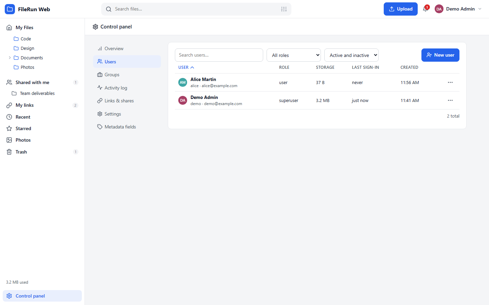
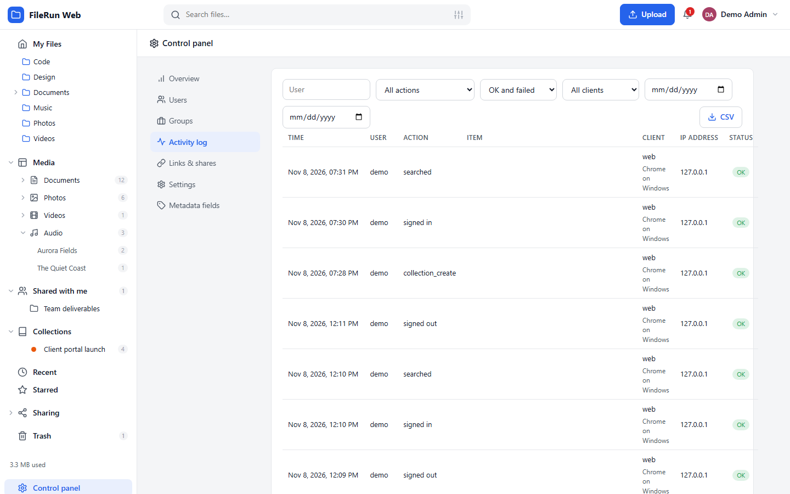
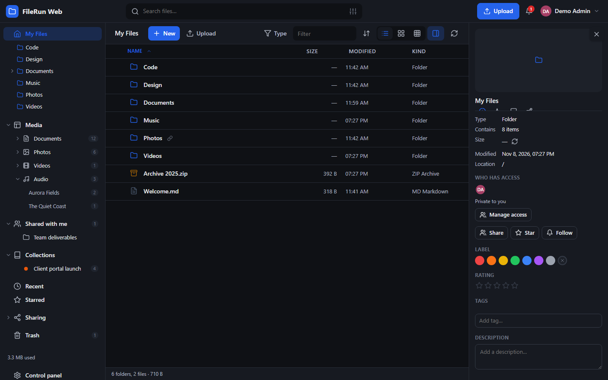

Like Google Drive, but on your own server. Sharing with roles, public links and file requests, versions, previews for everything, WebDAV, passkeys and a complete audit trail — in plain PHP and MySQL.

FileRun is a trademark of FileRun Lda. This is an independent re-implementation and is not affiliated with or endorsed by FileRun.
Seven roles from Viewer to Content manager, groups, guest accounts created from an e-mail address, "Shared with me" without copying anything.
Passwords, expiry dates, download limits, terms to accept, upload-only links, QR codes, one switch to turn every link off.
Images, video, audio, PDF, Markdown, code, CSV/XLSX, DOCX, fonts, archives — plus a code editor and an image editor.
Versions on every overwrite, a trash with retention, file locks, and an activity log that remembers who did what, from where, with which program.
Resumable chunked uploads, folder drops, clipboard paste, folder sync that skips unchanged files.
WebDAV with per-device app passwords, a JSON API with an OpenAPI description, an installable web app for phones.
Argon2id, two-step verification with e-mailed codes on by default, authenticator apps, passkeys, OpenID Connect, IP rules, session control.
Shared hosting, cPanel, a VPS or a NAS. Apache or Nginx, MySQL or MariaDB. No framework, no build step, no vendor lock-in: files stay normal files.









git clone https://github.com/gextam/filerun-web.git php bin/install.php --db-name=filerun --db-user=filerun --db-pass=secret \ --admin-user=admin --admin-pass='Str0ngPass!' --data-dir=/var/filerun-data \ --public-url=https://files.example.com